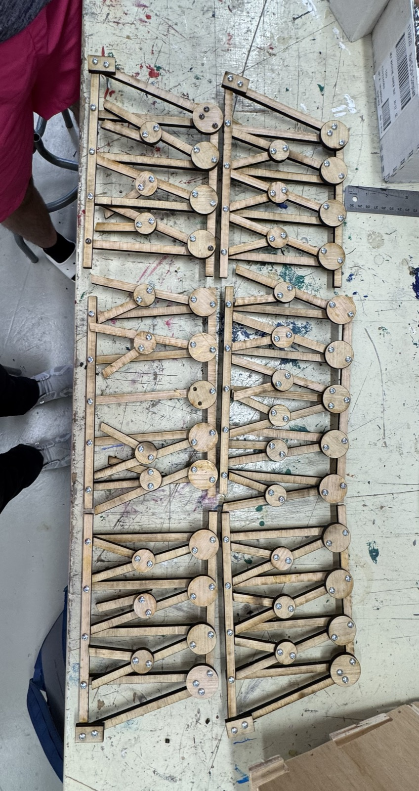
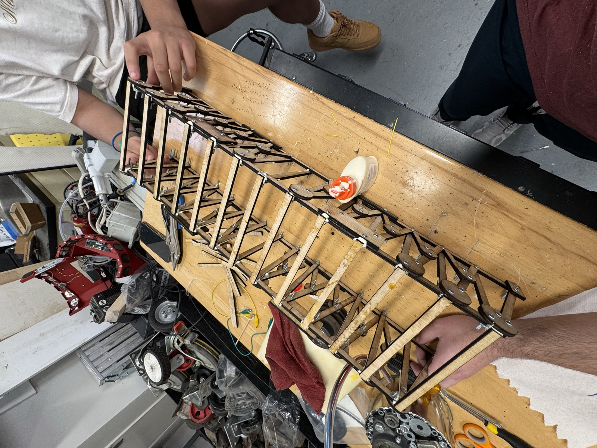

Project Overview
Over the course of this project, I designed, prototyped, and assembled a K-Truss bridge for Tulane's Truss Bust competition.
To start the project, we used the material we learned in our Statics lecture to calculate what the ideal type of truss would be based on the competition parameters, and got an estimate of an ultimate strength of ~105 lbs. Once these calculations were done, I moved on to the design phase. Using Fusion360, I went through multiple design iterations and tested different variations of layering before I settled on our final design. As a group, we also decided that we wanted to use screws and nuts to reinforce our truss. We knew this would likely disqualify us from winning the award for best truss weight to weight held, but we thought it was a reasonable decision to improve the other aspects of our bridge.
Once the design was completed, I ran a Finite Element Analysis on the 3D model of the bridge using Fusion360 to see if it would match the numbers we hand-calculated, which it did.
During the testing of Truss Bridges, we ended up supporting a maximum weight of 111 lbs, which won us the 2nd Place Overall Weight award. We also won the Judges Award for our use of Fusion360 and FEA to rapidly prototype our bridge.
Project Gallery



Testing Videos
Technical Details
Design
- K-Truss configuration
- Laser-cut wooden members
- Gusset plate joints
Materials
- 1/4" Plywood members
- Wood glue joints
- Bolt reinforced connections
Performance
- Maximum load: 111 lbs
- Structural analysis verified
- Competition tested